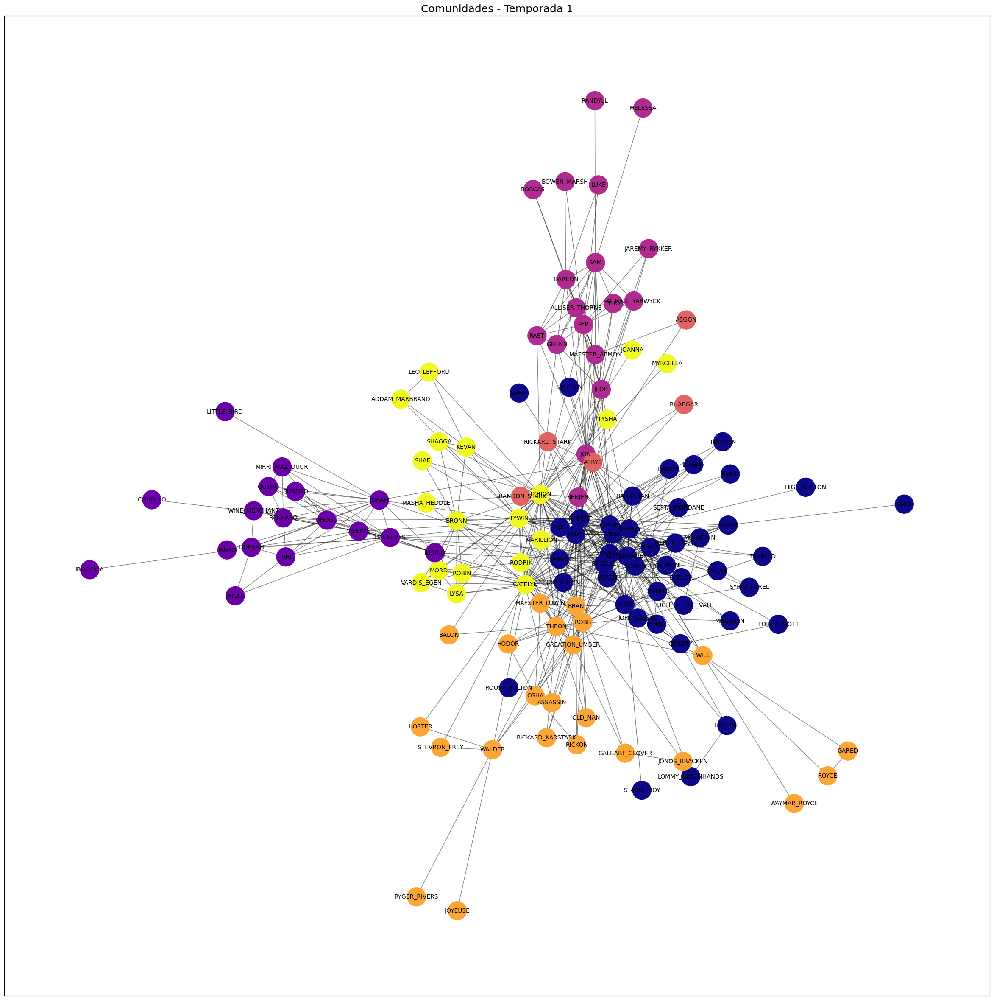

Mineração de grafos
Comparação das redes de interações entre personagens da série Game of Thrones.
Sou Analista de Business Intelligence e Analytics com conhecimentos em Big Data e Ciência de Dados, e mais de 2 anos de experiência com modelagem de dados, SQL e Power BI, desenvolvendo KPIs que suportam as tomadas de decisões com foco em People Analytics.
Minhas áreas de interesse são: Machine Learning, NLP (Natural Language Processing), Visão Computacional, Gen AI (Inteligência Artificial Generativa).
USP/ESALQ - Universidade de São Paulo (Em andamento)
PUCPR (Em andamento)
PUCPR (Concluído)
Desenvolvimento de mais de 15 KPIs e manutenção em mais de 40, com foco em People Analytics. Experiência completa no ciclo de vida dos indicadores: levantamento de requisitos, modelagem de dados (Spark SQL, Databricks), criação de dashboards para todos os tipos de públicos e reports para a alta liderança. Domínio de SQL para criação de views e stored procedures, e aplicação de storytelling para comunicação eficaz de insights.
Atuação focada em levantamento de requisitos e construção de indicadores estratégicos.
Especialista em imunoensaios, atuando na padronização de kits ELISA, purificação de proteínas e testes de qualidade como reprodutibilidade e shelf life. Aplicação de análises estatísticas e pesquisa científica para validação de métodos como Western Blot e Eletroforese.
Comparação das redes de interações entre personagens da série Game of Thrones.

Análise preditiva para estimar o nível de ruído (escala de pressão sonora) gerado por diferentes perfis de aerofólios da NASA.

Modelo preditivos para estimar a contribuição de um jogador para as vitórias do time, utilizando técnicas de redução de dimensionalidade e algoritmos de regressão.
(41) 998616047